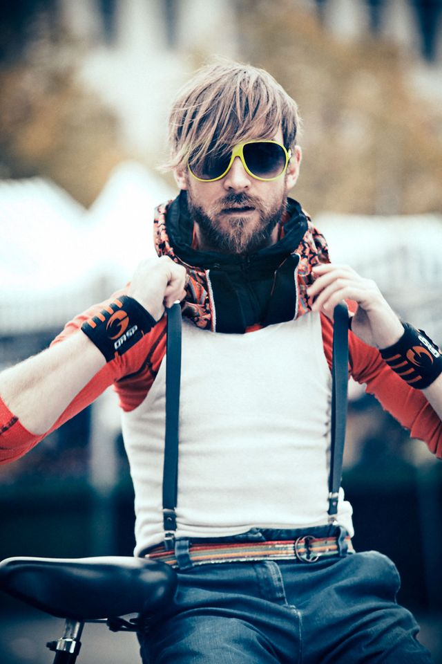

Oscar Beijbom
Mapping the World's Ocean Floors
PhD Thesis Proposal Work, UCSD, 2009 -
My PhD thesis work is on the general topic of extracting scientific information from images. Specifically, I focus on coral reef survey images, and take a holistic approach to solving this problem. As such, I have worked on color and texture descriptors; cost-sensitive multiclass machine learning methods; methods for interactive, and semi automated annotation; cost-effective sampling designs that utilize machine or crowd annotations; and new sensor technologies such as wide-field-of-view fluorescence cameras. Much of my research is made availible directly to the coral ecology community through our website, CoralNet.
CoralNet
CoralNet is a repository and a resource for benthic images analysis. The site implements our method from CVPR2012 and allow researchers, agencies, and private partners to rapidly annotate benthic survey images. The site also serves as a repository and collaboration platform for the scientific community. [www]
CoralNet users include the Caitlin Seaview Survey, the Australian Institute of Marine Science (AIMS) , Washington State University, University of Washington, University of North Carolina, Scripps Institution of Oceanography, Colby College, and Stanford@Sea.
Cost-Sensitive Multiclass Learning
Supervised machine learning algorithms are most commonly studied for cost-insensitive binary classification. In such scenario the algorithm learns to seperate between two equally costly (important) classes. However, in many practial sitautions, there are multiple classes, and in addition the misclassification costs may differ between the classes. For example, for image classification tasks the misclassification between a 'Mountain Gorilla' and a 'Western Lowland Gorilla' is less severe than, say a 'Giraffe' and 'Chair'. This leads to the more complicated scenario of cost-sensitive multiclass learning. In joint work with Steve Branson (CVPR 2013), we proposed a fast structured Support Vector Machine (SVM) solver capable of cost-sensitive multiclass learning. The solver is based on coordinate dual ascent and converges order of magnitudes faster than previous structured SVM solvers. In another paper (ICML 2014) I examined properties of loss functions for cost-sensitive multiclass learning together with Mohammad (Ehsan) Saberian, and showed that a surprisingly simple property, which we call guess-averse has strong empirical imporatance.
Coral Annotation Benchmark Datasets
I have prepared two datasets containing expert-annotated coral reef survey images: Moorea Labeled Corals and Pacific Labeled Corals. These datasets provide unique oportunities for benchmarking computer vision methods for texture classification and segmentation as well as machine learning methods for transfer learning.
The Moorea Labeled Corals dataset is a subset of the Moorea Coral Reef-Long Term Ecological Research (MCR-LTER) dataset, packaged for Computer Vision research. It contains over 400,000 expert annotations across 2,055 coral reef survey images from the island of Moorea in French Polynesia. Each image has 200 expert random point annotations, indicating the substrate underneath each point. This recent publication performs a benchmark evaluation of various coral reef image analysis methods on Moorea Labeled Corals.
Pacific Labeled Corals is an aggregate dataset containing 2,318 coral reef survey images from four Pacific monitoring projects and contains 318,828 expert annotations. The images have all been annotated using a random point annotation tool by a coral reef expert. In addition, 200 images from each location have been cross-annotatoed by 6 experts, for a total of 7 sets of annotations for each image.
Counting Calories
Microsoft Research, Seattle, Washington, USA
Menu-Match
 The World Health Organization (WHO) predicts that overweight and obesity may soon replace more traditional public health concerns such as undernutrition and infectious diseases as the most significant cause of poor health. Logging food and calorie intake has been shown to facilitate weight management, but current food logging methods are time-consuming and cumbersome, which limits their effectiveness.
The World Health Organization (WHO) predicts that overweight and obesity may soon replace more traditional public health concerns such as undernutrition and infectious diseases as the most significant cause of poor health. Logging food and calorie intake has been shown to facilitate weight management, but current food logging methods are time-consuming and cumbersome, which limits their effectiveness.
During my internship at Microsoft Reseach, I developed a practical method for food-logging from images. The method utilize a data-base of menu items to estimate the nutritioal content of the querry image. As demonstrated on a challenging Menu-Match dataset and an existing thirdparty dataset, our approach outperforms previous computer vision methods. Our Menu-Match dataset of realistic restaurant meals is publicly available.
Building An Invisible Bike Helmet
Hövding AB, Malmö Sweden
Invisible Helmet  From Hövding's website: Hövding is a bicycle helmet unlike any other currently on the market. It's ergonomic, it's practical, it complies with all the safety requirements, and it's also subtle and blends in with what else you are wearing.Hövding is a collar for bicyclists, worn around the neck. The collar contains a folded up airbag that you'll only see if you happen to have an accident. The airbag is shaped like a hood, surrounding and protecting the bicyclist's head. The trigger mechanism is controlled by sensors which pick up the abnormal movements of a bicyclist in an accident. The actual collar is the visible part of the invention. It's covered by a removable shell that you can change to match your outfit, and we'll be launching new designs all the time. Hövding is a practical accessory that's easy to carry around, it's got a great-looking yet subtle design, and it will save your life.
I was fortunate to be the first employee at Hövding. My task was to develop the accident detection system from scratch. This involved everything from selecting hardware sensors, collecting train data, setting up a computational infrastructure, defining target performances, and developing the actual algorithm. I worked with a small team of engineers on this task.
Hövding has been covered in thousands of video and news-releases, inluding storys from NBC, WIRED, The Washington Post, and der Spiegel. Filmmaker Fredrik Gerttens short-film about Hövding have been viewed over 20 million times. Some of my other personal favourites are this story by a Swiss independent reporter, and this one by a German talk show host. Please see Hövdings press page for a complete list.
Blood cell focus
Cellavision AB, Lund Sweden
From Cellavisions website: CellaVision AB develops and markets products for the health care sector, enabling fast and firm blood cell analysis and quality assurance of morphology diagnosis. The company has cutting-edge expertise within sophisticated digital image analysis, artificial intelligence and automated microscopy. For laboratories, this means increased efficiency, a simplification of the procedures and confirmed proficiency. The product line includes systems for automatic blood cell differentials and software for differential proficiency testing and education. The products are sold to hospital laboratories and independent commercial laboratories. Today CellaVision is represented in Europe, North America and to some extent in Asia.
I did my masters thesis at Cellavision, where I worked on a single-image focus level assessment method for blood cell images. This is in contrast with standard methods for image focusing that use multiple images together to determine focus level. The method I developed has an international patent and is used today at Cellavision. [www]